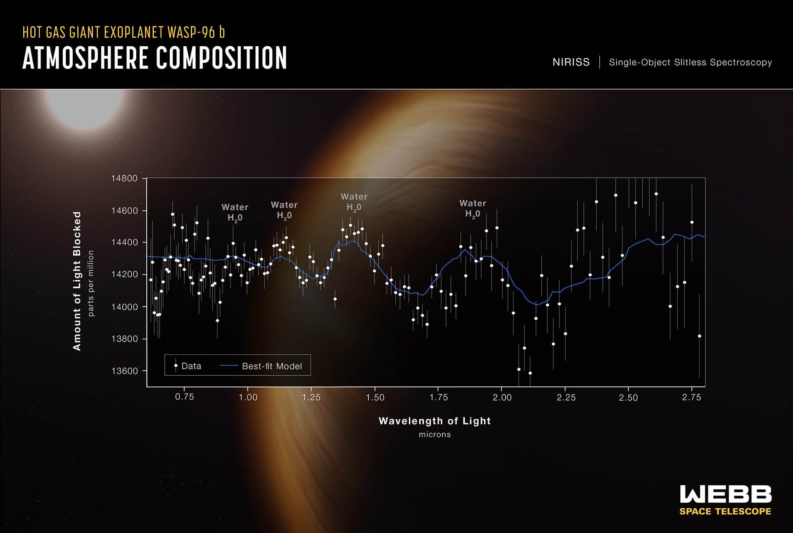
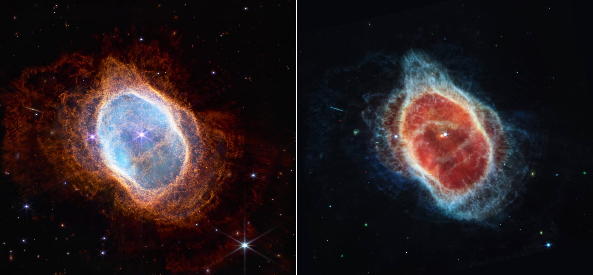
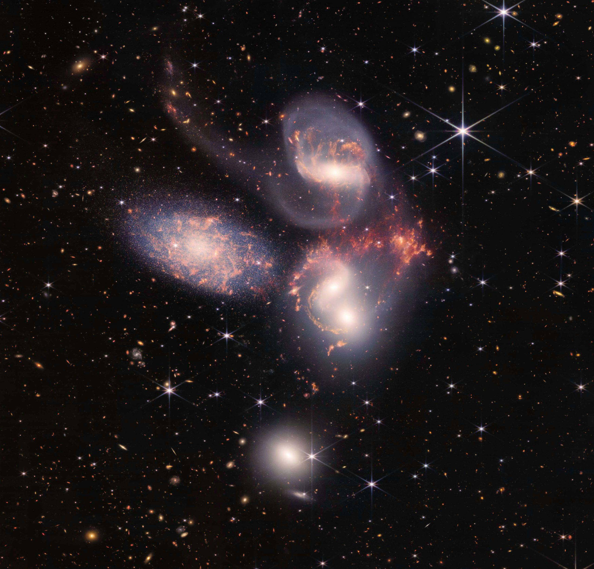
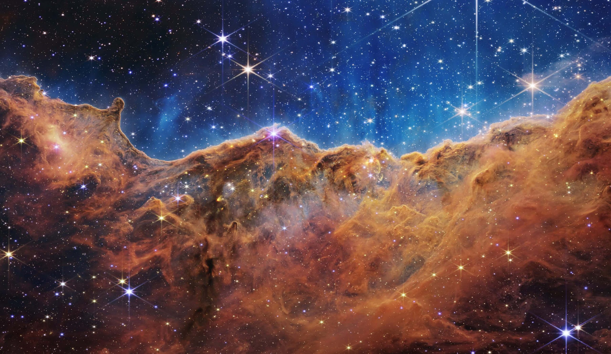

အခု ဆောင်းပါးမှာတော့ ဒီ ဓါတ်ပုံ ၅ ပုံမှာ ပါဝင်တဲ့ အချက်အလက် တွေကို ရှင်းပြသွား ပေးမှာ ဖြစ်ပါတယ်။
စကြာဝဠာရဲ့ အနက်ရှိုင်းဆုံးပုံ

{kind=link}
ဒီပုံက နာဆာရဲ့ ပင်မ အခမ်းအနား မတိုင်မီ တရက်စောပြီး အမေရိကန် သမတ ဂျိုး ဘိုင်ဒင် ထုတ်ဖော် ပြသခဲ့တဲ့ ပုံဖြစ်ပါတယ်။
ဒီပုံမှာ အလယ်မှာ မြင်ရတာက ကမ္ဘာကနေ အလင်းနှစ် ၄.၆ ဘီလီယံ အကွာမှာ ရှိတဲ့ SMACS 0723 ဂလက်ဆီ အစုအဝေးကြီး ဖြစ်ပါတယ်။
ဒီ ဂလက်ဆီ အစုအဝေးရဲ့ နောက်ဖက်မှာ ရှိနေတဲ့ အခြား ဂလက်ဆီ တွေက လာတဲ့ အလင်းဟာ ဒီ ဂလက်ဆီ အစုကြီးရဲ့ ဆွဲငင်အား သက်ရောက်မှုကြောင့် ကွေးသွားပါတယ်။
ဒီလို ကွေးသွားတာမို့ ဒီ နောက်ခံ ဂလက်ဆီ တွေကို အလင်းရောင် ကွေးကွေး လေးတွေ အဖြစ်နဲ့ မြင်ကြရတာ ဖြစ်ပါတယ်။’
ဒီပုံမှာ မြင်ရတဲ့ ၆ မြှောင့်ပုံ အလင်းစက် တွေဟာ ကျွန်တော်တို့ရဲ့ မစ်ကီးဝေး ဂလက်ဆီ ထဲက ကြယ်တွေ ဖြစ်ပါတယ်။
အလင်းရောင် ရှည်ရှည် ကွေးကွေး လေးတွေ အားလုံးဟာ နောက်ခံက ဂလက်ဆီတွေ ဖြစ်ပါတယ်။ ဒီ ဂလက်ဆီ တွေ ထဲက အချို့သော ဂလက်ဆီ တွေဟာ ဘယ်လောက်တောင် ဝေးလဲ ဆိုရင် သူတို့ဆီက အလင်း ကမ္ဘာကို ရောက်ဖို့ နှစ်ပေါင်း ၁၃ ဘီလီယံ လောက်ထိ အချိန် ကြာပါတယ်။
ဒီအထဲက ဂလက်ဆီ တစ်ခုဟာ ဆိုရင် ကမ္ဘာကနေ အလင်းနှစ် ၁၃.၁ ဘီလီယံ အကွာမှာ ရှိပြီး အခုထိ တွေ့ခဲ့ ဖူးသမျှ ဂလက်ဆီ တွေထဲမှာ အဝေးဆုံး ဂလက်ဆီ ဖြစ်ပါတယ်။
တနည်းအားဖြင့် ဒီ ဂလက်ဆီဟာ စကြာဝဠာ မွေးဖွားပြီး နှစ်ပေါင်း သန်း ၇၀၀ လောက်ပဲ သက်တမ်း ရှိစဉ်က ဖြစ်တည်ခဲ့တဲ့ ဂလက်ဆီ ဖြစ်ပါတယ်။
WASP-96 b ဓါတ်ငွေ့ ဂြိုဟ်ကြီး၏ လေထု

{kind=link}
ဒီ ပုံကတော့ ဓါတ်ပုံ မဟုတ်ပါဘူး။ Spectrometer ခေါ်တဲ့ အလင်းရောင်စဉ် ဖမ်းယူ ထားတဲ့ ပုံဖြစ်ပါတယ်။
ကြယ်တွေ၊ ဂလက်ဆီ တွေဆီက လာတဲ့ အလင်းရဲ့ ရောင်စဉ်တွေကို ခွဲခြမ်း စိတ်ဖြာ ကြည့်မယ်ဆိုရင် အချို့ အရောင်တွေက ပိုအားကောင်းပြီး အချို့ အရောင်တွေက အားဖျော့နေတာကို တွေ့ကြရမှာ ဖြစ်ပါတယ်။ ဒီလို ဖြစ်ရတာဟာ ဒီ ကြယ် (သို့) ဂလက်ဆီ တွေကို ဖွဲ့စည်းထားတဲ့ ဒြပ်စင်တွေပေါ် အများကြီး မူတည် နေပါတယ်။
ဒီ အလင်းရောင်စဉ်ကို ဖတ်ပြီး ဒီ ကြယ် တွေ ဂလက်ဆီ တွေရဲ့ ဒြပ်စင် ဖွဲ့စည်းမှုကို ဆုံးဖြတ် နိုင်ပါတယ်။ ဒီလိုပဲ ဂြိုဟ်တွေ ဆီက အလင်းကို ဖတ်ပြီးတော့လဲ ဒီ ဂြိုဟ်ရဲ့ လေထု ဖွဲ့စည်းပုံကို ဆုံးဖြတ် နိုင်ပါတယ်။
ဒီ နေရာမှာ အရမ်းဝေးတဲ့ ဂြိုဟ်တွေကျတော့ ဂြိုဟ်ရဲ့ လေထုကို ဖြတ်လာတဲ့ အလင်းကို တိုက်ရိုက် ဖတ်လို့ မရနိုင်ပါဘူး။ ဒါ့ကြောင့် သွယ်ဝိုက်တဲ့ နည်းလမ်းကို အသုံး ပြုကြ ရပါတယ်။
အခု ဂျိမ်းစ်ဝက်ဘ်က WASP-96 b ရဲ့ လေထုကို ဖတ်တဲ့ အခါမှာလဲ သွယ်ဝိုက်တဲ့ နည်းလမ်းကို အသုံးပြု ရပါတယ်။ ဒီ ဂြိုဟ်က သူ့ရဲ့ မိခင် ကြယ်ရှေ့က ဖြတ်တဲ့ အချိန်မှာ ကြယ်ကလာတဲ့ အလင်း ကို ကွယ်လိုက်သလို ဖြစ်တာမို့ အလင်းအား ကျသွားပါတယ်။
ဒီလို ဖြတ်သွားတဲ့ အချိန်မှာ ကြယ်ရဲ့ အလင်းက ဂြိုဟ်ရဲ့ လေထုကို ဖြတ်သွားပြီးမှ ဂျိမ်းစ်ဝက်ဘ် ဆီကို ရောက်လာတာမို့ အဲ့သည်အချိန် ဖတ်လို့ရတဲ့ အလင်းရောင်စဉ်နဲ့ ပုံမှန် အချိန် ကြယ်ကနေ ရတဲ့ အလင်းရောင်စဉ် နှစ်ခုကို ယှဉ်ကြည့်ခြင်း အားဖြင့် ဂြိုဟ်ရဲ့ အလင်းရောင်စဉ်ကို တိုင်းတာနိုင်မှာ ဖြစ်ပါတယ်။
ယခု တိုင်းတာချက် အရ ဒီ ဂြိုဟ်ရဲ့ လေထုထဲမှာ ရေအမြောက်အများ ရှိနေတာကို ရှာဖွေ တွေ့ရှိ ခဲ့ကြပါတယ်။
ဒီ ဂြိုဟ်ပေါ်က ရေက အရည် အဖြစ် ရှိနေတာတော့ မဟုတ်ပါဘူး။ ဒီဂြိုဟ်ဟာ နေနဲ့ အရမ်း နီးကပ်လွန်း တာမို့ အလွန်လဲ ပူပြင်းပါတယ်။
ဒါ့ကြောင့် ဒီ ဂြိဟ်ပေါ်က ရေဟာ ရေငွေ့အဖြစ်ပဲ ရှိနေမှာ ဖြစ်ပါတယ်။
သေခါနီး အသက်ငင်နေသော ကြယ်

{kind=link}
နောက်တပုံ ကတော့ Southern Ring Nebula လို့ ခေါ်တဲ့ တောင်ဖက်ခြမ်း လက်စွပ်ပုံ နက်ဗြူလာ တိမ်တိုက်ကြီးရဲ့ ပုံပဲ ဖြစ်ပါတယ်။
ဒီပုံဟာ တကယ်တော့ သေဆုံးခါနီး အသက်ငင် နေပြီဖြစ်တဲ့ ကြယ်ကြီးကနေ တွန်းကန် ထုတ်လိုက်တဲ့ ဓါတ်ငွေ့တွေကို ကွင်းကြီး အဖြစ်နဲ့ မြင်ကြရတာ ဖြစ်ပါတယ်။
အခု ထုတ်ဖေါ်ပြသလိုက်တဲ့ ပုံမှာ ဘယ်ဖက်က ပုံက အနီး အနီအောက်ရောင်ခြည် ကင်မရာနဲ့ ရိုက်ကူးထားတဲ့ ဓါတ်ပုံ ဖြစ်ပါတယ်။
အနီး အနီအောက် ရောင်ခြည် ဆိုတာက အနီရောင် နဲ့ ကပ်နေတဲ့ အနီအောက် ရောင်ခြည် လှိုင်းခွင် ဖြစ်ပါတယ်။
အနီအောက် ရောင်ခြည် ခွင်ကို ၃ ပိုင်း ပိုင်းပြီး အနီရောင်နဲ့ ကပ်နေတဲ့ လှိုင်းခွင်ကို အနီး အနီအောက် ရောင်ခြည် (near infrared region)၊ အနီရောင်နဲ့ ဝေးပြီး မိုက်ကရိုဝေ့ လှိုင်းနား ကပ်နေတဲ့ အနီအောက် ရောင်ခြည် လှိုင်းခွင် ကိုတော့ အဝေး အနီအောက် ရောင်ခြည် (far infrared region) ဆိုပြီး သတ်မှတ် ထားပါတယ်။
သူတို့ နှစ်ခုရဲ့ ကြားက လှိုင်းခွင် ကိုတော့ mid infrared region ဆိုပြီး သတ်မှတ် ထားပါတယ်။
ဘယ်ဖက်က ပုံဟာ အနီး အနီအောက် ရောင်ခြည် ကင်မရာနဲ့ ရိုက်ကူးထားတာ ဖြစ်ပါတယ်။
ဒီပုံမှာ အလယ်က လင်းထိန်နေတဲ့ ကြယ်ကနေ မှုတ်ထုတ် လိုက်တဲ့ ဓါတ်ငွေ့တွေကို ပတ်ခြာလည်မှာ ကွင်းအထပ်ထပ် အနေနဲ့ မြင်ကြရတာ ဖြစ်ပါတယ်။ ကွင်း တစ်ရစ် စီဟာ ဒီ ကြယ်ကနေ တကြိမ် မှုတ်ထုတ် လိုက် ချိန်မှာ ဖြစ်ပေါ်လာတဲ့ ဓါတ်ငွေ့တွေ ဖြစ်ကြပါတယ်။
ညာဖက်က ပုံကတော့ ကြား အနီအောက် ရောင်ခြည် ကင်မရာ (mid-infrared camera) နဲ့ ရိုက်ထားတာ ဖြစ်ပါတယ်။ ဒီပုံမှာ ထူးခြားတာ ကတော့ အလယ်က ကြယ်ဟာ တစ်လုံးထဲ မဟုတ်ပဲ နှစ်လုံး ဖြစ်နေတာ တွေ့ကြရမှာ ဖြစ်ပါတယ်။
ဒီ နက်ဗြူလာရဲ့ အလယ်က ကြယ်ဟာ နှစ်လုံးတွဲ ကြယ်အမွှာပူး ဆိုတာ သိပ္ပံ ပညာရှင်တွေ သိခဲ့တာ ကြာပါပြီ။ ဒါပေမယ့် ဒီကြယ် နှစ်လုံးပူးကို မျက်မြင် တွေ့ကြရ တာဟာ အခုအကြိမ်ဟာ ပထမဆုံး အကြိမ် ဖြစ်ပါတယ်။
ဂလက်ဆီ ကပွဲ

{kind=link}
ဒီ ပုံမှာ ဂလက်ဆီ ၅ ခု ပူးနေတဲ့ ပုံကို တွေ့ကြရမှာ ဖြစ်ပါတယ်။ Stephan’s Quintet လို့ အမည်ပေး ထားတဲ့ ဒီ ဂလက်ဆီ ၅ ခုဟာ တကယ်တော့ တခုနဲ့ တခု တဖြည်းဖြည်းချင်း ပေါင်းနေကြတာ ဖြစ်ပါတယ်။
ဘယ်ဖက် အစွန်က ဂလက်ဆီ ကြီးဟာ အခြား ဂလက်ဆီ ၄ ခုထက် စာရင် ကမ္ဘာနဲ့ ပိုပြီး နီးပါတယ်။ ဒါပေမယ့် ညာဖက်က ဂလက်ဆီ ၃ လုံး ကတော့ တစ်ခုနဲ့ တစ်ခု နီးကပ်နေပြီး အချင်းချင်း တဖြည်းဖြည်း ပေါင်းစီး မိနေပါတယ်။
အခု ဓါတ်ပုံဟာ နက္ခတ် ပညာရှင် တွေအတွက် အရေးပါတဲ့ ဓါတ်ပုံ တစ်ပုံ ဖြစ်ပါတယ်။ ဒီ ဓါတ်ပုံက နေတဆင့် ဂလက်ဆီ တွေရဲ့ ဘဝ ဖြစ်စဉ်ကို အသေးစိတ် လေ့လာနိုင်မှာ ဖြစ်လို့ပါ။
ကြယ်များ မွေးဖွားနေပုံ

{kind=link}
နောက်ဆုံးပုံကတော့ ကရီနာ နက်ဗြူလာ တိမ်တိုက်ကြီး (Carina Nebula) ကို အသေးစိတ် ရိုက်ယူထားတဲ့ ပုံဖြစ်ပါတယ်။ ဒီပုံမှ ဓါတ်ငွေ့ တိမ်လွှာတွေ အကြားမှာ လင်းထိန် နေတဲ့ အလင်းစက် တွေ အားလုံးဟာ အသစ် မွေးဖွား နေတဲ့ ကြယ်သစ်တွေ ဖြစ်ကြပါတယ်။
အခု ပုံထဲမှာ မြင်ရတဲ့ ကြယ်တွေကို အရင်က တွေ့မြင်ရခြင်း မရှိ ခဲ့ပါဘူး။ ဂျိမ်းစ်ဝက်ဘ်ရဲ့ အားကောင်းတဲ့ မှန်ဘီလူး နဲ့ အနီအောက် ရောင်ခြည် ကင်မရာ တွေကြောင့်သာ တွေ့မြင် နိုင်တာ ဖြစ်ပါတယ်။
ဒီ တိမ်တိုက် ကြီးထဲမှာ ကြယ်သစ် အလုံးပေါင်း ရာချီပြီး မွေးဖွားနေ ကြတာ ဖြစ်ပါတယ်။
အခုပုံကို အသေးစိတ် လေ့လာခြင်း အားဖြင့် စကြာဝဠာ ထဲမှာ ကြယ်တွေ မွေးဖွားတဲ့ ဖြစ်စဉ်နဲ့ ပါတ်သက်လို့ အသိအမြင် အသစ်တွေ ရရှိ လာနိုင် လိမ့်မယ်လို့ သိပ္ပံ ပညာရှင် များက ယုံကြည် ကြပါတယ်။